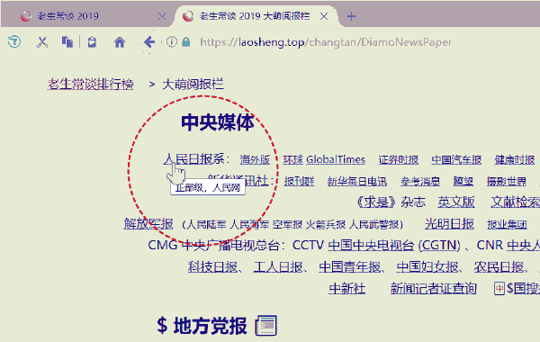
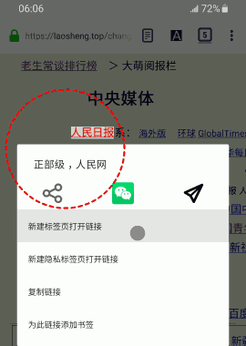

点击二维码，“在浏览器打开” https://Laosheng.top
点击二维码，“在浏览器打开” https://Laosheng.top
老生常谈排行榜 ＞ 大萌阅报栏
|
新B昌吉
C石河子
D奎屯 E博尔塔拉 F伊犁 G塔城
新疆
乌鲁木齐 新A 新H阿勒泰 J克拉玛依 K吐鲁番 L哈密 M巴音郭楞 新N阿克苏 新P克州 新Q喀什 新R和田 甘B嘉峪关 C金昌 D白银 E天水 F酒泉 G张掖 甘肃 兰州 甘A 甘H武威 J定西 K陇南 L平凉 M庆阳 N临夏州 甘P甘南州 蒙B包头 C乌海 D赤峰 E呼伦贝尔 F兴安 G通辽 内蒙古 呼和浩特 蒙A 蒙H锡林郭勒 J乌兰察布 K鄂尔多斯 L巴彦淖尔 蒙M阿拉善 |
黑A 哈尔滨
黑龙江
黑B齐齐哈尔 C牡丹江 D佳木斯
E大庆
F伊春
黑G鸡西 H鹤岗 J双鸭山 K七台河 L松花江 M绥化 N黑河 P大兴安岭 黑R农垦系统 吉A 长春 吉林 吉B吉林 C四平 D辽源 吉E通化 F白山 吉G白城 H延边 吉J松原 辽A 沈阳 辽宁 辽B大连 C鞍山 D抚顺 E本溪 F丹东 G锦州 H营口 J阜新 辽K辽阳 L盘锦 M铁岭 N朝阳 P葫芦岛 辽V省直机关 |
||
|
宁夏
银川 宁A
宁B石嘴山 C吴忠 D固原 陕西 西安 陕A 陕B铜川 C宝鸡 D咸阳 E渭南 F汉中 G安康 陕H商洛 J延安 K榆林 V杨凌 青海 西宁 青A 青B海东 C海北 D黄南 E海南州 青F果洛 G玉树 H海西州 西藏 拉萨 藏A 藏B昌都 C山南 D日喀则 E那曲 藏F阿里 G林芝 H驻川 藏J驻青 广播 杂志 |
冀B唐山
河北：冀A
石家庄 C秦皇岛
D邯郸 E邢台 F保定 G张家口 H承德 J沧州 R廊坊 T衡水 晚报 商报 新京报 北京： 京ABCDE JKLMY 北广 党媒 每日新报 天津： 津ABCDE 今晚报 E东营 F烟台 G潍坊V 山东：鲁A 济南 B青岛u C淄博 D枣庄 H济宁 J泰安 K威海 L日照 M滨州 N德州 P聊城 Q临沂 R菏泽 S莱芜 山西：晋A 太原 晋B大同 C阳泉 D长治 E晋城 F朔州 晋H忻州 J吕梁 K晋中 L临汾 M运城 H焦作 E安阳 F鹤壁 G新乡 河南：豫A 郑州 豫B开封 C洛阳 D平顶山 豫J濮阳 K许昌 L漯河 M三门峡 N商丘 P周口 Q驻马店 R南阳 S信阳 U济源 E马鞍山 F淮北 G铜陵 安徽： 皖A 合肥 报业 皖B芜湖 C蚌埠 D淮南 H安庆 J黄山 K阜阳 L宿州 M滁州 N六安 P宣城 Q巢湖 R池州 S亳州 E宜昌 F襄樊 G鄂州 湖北：鄂A 武汉 鄂B黄石 C十堰 D荆州 H荆门 J黄冈 K孝感 鄂L咸宁 M仙桃 N潜江 P神农架 Q恩施 R天门 S随州 湘D衡阳 E邵阳 湖南：湘A 长沙 湘B株洲 C湘潭 湘F岳阳 G张家界 H益阳 J常德 K娄底 L郴州 M永州 N怀化 U湘西 |
苏A
南京
江苏
报业
苏B无锡 C徐州 D常州 (武进) E苏州 F南通 苏G连云港 H淮安 J盐城 K扬州 L镇江 M泰州 N宿迁 沪ABCD 上海 报业： 新民晚报 文汇报 沪R 崇明区 城乡报 劳动报 浙A 杭州 报业 浙江 报业 浙B宁波 (慈溪) C温州(瑞安) D绍兴 E湖州 F嘉兴 (海宁) G金华 (义乌) H衢州 J台州 K丽水 L舟山 |
|
|
川B绵阳
C自贡
D攀枝花
E泸州
F德阳
四川
报业
成都
川A
H广元 J遂宁 K内江 L乐山 川M资阳 Q宜宾 R南充 S达州 T雅安 U阿坝 V甘孜 W凉山 川X广安 Y巴中 Z眉山 重庆 报业 渝A 渝B江南 C永川 F万州 G涪陵 H黔江 市区报 长 晨 贵B六盘水 C遵义 D铜仁 E黔西南 F毕节 G安顺 贵阳 贵州 贵A 贵H黔东南 J黔南 云B东川 C昭通 D曲靖 E楚雄 F玉溪 G红河 H文山 云南 昆明 云A 云J普洱 K西双版纳 L大理 M保山 N德宏 P丽江 Q怒江 R迪庆 S临沧 桂B柳州G 桂C桂林H 桂D梧州 广西 南宁 桂A 桂E北海 F崇左 G来宾 J贺州 K玉林 L百色 M河池 N钦州 P防城港 R贵港 |
赣A 南昌M
江西
B赣州
(瑞金)
C宜春
D吉安
(遂川)
E上饶
赣F抚州 G九江 H景德镇 J萍乡 K新余 % L鹰潭 闽A 福州 福建 闽B莆田 C泉州 D厦门 闽E漳州 F龙岩 G三明 H南平 闽J宁德 台湾 中国时报 粤A 广州 广东 粤B深圳 粤C珠海 D汕头 E佛山 (陶) F韶关 G湛江 H肇庆 J江门 K茂名 L惠州 M梅州 N汕尾 P河源 Q阳江 R清远 粤S东莞 T中山 U潮州 V揭阳 W云浮 X顺德 粤Y南海 香港 （中联办） 大公报 文汇报 香港商报 澳门 粤Z港澳入内车辆 南都 南方周末 羊城晚报 (新快报) 琼A 海口 海南 (特区报) B三亚 C琼北 D琼南 E洋浦开发区 三沙 |
||
| 中国邮政 报刊征订电话：11185-9（客服热线） |
|


电脑浏览器鼠标指针悬停效果截屏、手机Firefox浏览器长按链接效果截屏。 大萌阅报栏，在浏览器打开，体验更佳！😋 |
|
⛄️$俄罗斯卫星通讯社
哈萨克斯坦
🎎朝鲜日报
🗾朝日新闻
巴基斯坦 👳印度快报 看国外 🏝%星洲日报 🛳联合早报 🗽美国CNN UN |
国务院各部及直属机构
中国改革报（国家发改委） 中国教育报（教育部） 中国民族报（国家民委） 人民公安报（公安部）
中国社会报（民政部） 中国财经报（财政部） 中国劳动保障报（人社部） 中国自然资源报（自然资源部） 中国环境报（生态环境部）
中国建设报（住房和城乡建设部） 中国交通报（交通运输部） 中国水利报（水利部） 农民日报（农业农村部）
国际商报（商务部） 中国文化报（文化和旅游部） 健康报（国家卫健委） 中国人口报（国家卫健委）
金融时报（中国人民银行） 中国审计报（审计署） 中国应急管理报（应急管理部） 中国旅游报（文化和旅游部）
中国市场监管报（国家市场监督管理总局） 中国质量报（国家市场监督管理总局） 中国税务报（国家税务总局）
中国体育报（国家体育总局） 中国信息报（国家统计局） 中国绿色时报（全国绿化委员会、国家林业和草原局）
科学时报（中国科学院、中国工程院、国家自然科学基金委员会） 中国社会科学报（中国社会科学院）
中国经济时报（国务院发展研究中心） 中国气象报（中国气象局） 中国档案报（国家档案局）
中华合作时报（中华全国供销合作总社） 工人日报（中华全国总工会） 中国青年报（共青团中央）
中国妇女报（全国妇联） 文艺报（中国文联，委托中国作协主办） 民主与法制时报（中国法学会）
中国贸易报（中国国际贸易促进委员会） 华夏时报（中国残联） 中国红十字报（中国红十字会总会）
中共中央直属机构
中国纪检监察报（中央纪委） 法治日报（中共中央政法委） 学习时报（中共中央党校）
国家司法机关
人民法院报（最高人民法院） 检察日报（最高人民检察院）
国务院派出机构
大公报（香港中联办） 文汇报（香港中联办） 香港商报（香港中联办）
各民主党派中央和全国工商联
人民政协报（全国政协） 团结报（民革） 群言（民盟） 经济界（民建） 民主（民进） 前进论坛（农工党）
中国致公（致公党） 九三中央社讯（九三学社） 台盟（台盟） 中华工商时报（全国工商联）
老生常谈排行榜 之 大萌阅报栏
2019-2020 © Copyright by 大萌
知识共享 署名-非商业性使用-禁止演绎 4.0
CC-BY-NC-ND-4.0
最近更新： v0.9.8
20200914 增加证券类报纸的注释。
<<返回上一级
点击二维码，“在浏览器打开” https://Laosheng.top